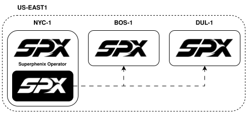
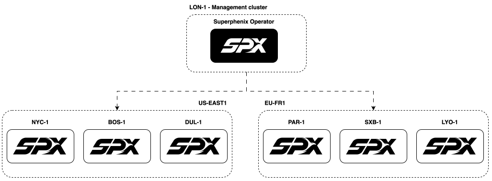

Deployment topology
This page covers how availability zones (AZs) and the management plane can be deployed: storage and virtualization (hyperconverged vs decoupled), and management placement (inside an AZ vs outside).
Management plane
The management plane operates Superphenix: the web console, GitOps (e.g. deployment and sync from Git), bootstrap, installation, and upgrades; i.e. the full lifecycle of the AZs. It is where operators and tenants interact with the platform and where the declarative state (Git) is applied to the AZs.
The management plane can run inside an AZ (the same Kubernetes cluster as one of your AZs hosts both workloads and the management components) or on a dedicated management cluster that is completely separate. When separate, that management cluster can even run on another cloud or provider: you can operate Superphenix AZs in your own datacenters from a management cluster hosted elsewhere, as long as it has the necessary connectivity to the AZs for API and GitOps.
Visual comparison
-
Management on an AZ

-
Management outside the AZ

Comparison
| Aspect | Management on an AZ | Management outside the AZ |
|---|---|---|
| Deployment | Easier to deploy | Harder (separate management cluster to provision) |
| Maintenance | Easier to maintain | Harder (additional management cluster to operate) |
| Multiple AZs | If the management plane controls multiple AZs, the hosting AZ is a single point of failure (SPOF) | Easier to manage multiple AZs from a single, neutral management plane |
| Failover | Management is tied to one AZ; failover is harder | Easier to failover; the management plane is not tied to any workload AZ |
| Dependency | Management runs on Superphenix (same stack as the AZ) | Does not depend on Superphenix (no chicken-and-egg; can run on vanilla Kubernetes or another cloud) |
Recommendation
- Management on an AZ: A good fit for organizations that want isolated AZs: each AZ hosts its own management plane, and that plane manages only that AZ (not multiple AZs). Suited to security requirements where strict isolation between AZs is needed.
- Management outside the AZ: A good fit for orchestrating multiple AZs at scale from a single management plane on a dedicated management cluster, and for redundancy (management is independent of any workload AZ).
Hyperconverged vs decoupled
AZs can be deployed in two ways:
- Hyperconverged: Both storage and virtualization run on the same cluster. Compute and storage share the same nodes. This is the simplest model and is well suited to single-AZ deployments.
- Decoupled (traditional): Storage runs on separate, dedicated clusters; workload clusters run on one or more other Kubernetes clusters that consume that storage. Multiple private workload AZs can share the same storage backend. This model is useful when you want to run several workload AZs (e.g. in different racks or sites) against a single, shared storage pool.
Comparison
| Aspect | Hyperconverged | Decoupled |
|---|---|---|
| Deployment | Easy to deploy | Harder to deploy (twice the clusters) |
| Maintenance | Easy to maintain | Harder to maintain (twice the clusters) |
| Cost | Less costly; hardware is mutualized (compute and storage share the same servers) | Higher cost; dedicated hardware for storage and for hypervisor |
| Scaling | Easier to scale horizontally: add servers to grow both storage and compute | Scale storage and workload clusters independently |
| Performance | Shared resources between storage and compute | Better performance; hardware is dedicated (storage arrays vs hypervisor nodes) |
| Multi-AZ / shared storage | Each AZ typically has its own storage | Easier to share storage among many private-cloud AZs; multiple workload clusters use the same storage backend |
Recommendation
- Hyperconverged is a good fit for organizations that want to scale horizontally (grow by adding servers), for proofs of concept (PoCs), and for single-AZ deployments where storage does not need to be shared with other clusters.
- Decoupled is a better fit when performance is a priority (dedicated storage and hypervisor hardware), when storage must be shared with other Superphenix clusters (multiple private-cloud AZs), or when storage must be shared with external systems (e.g. a VMware cluster or other non-SPX workloads).
Choosing your deployment topology
The combination of AZ mode (hyperconverged or decoupled) and management placement (on an AZ or outside) defines four deployment types. The matrix below summarizes them; the paragraphs that follow help you pick one and clarify what can be changed later.
Deployment matrix
The choice between hyperconverged and decoupled is made per AZ: you can have some AZs that are hyperconverged and others that are decoupled. The management plane can manage AZs of different types.
By contrast, where the management plane runs (on one of the AZs or on a dedicated management cluster outside all of them) is a single decision for the whole deployment.
The matrix below combines the two dimensions (AZ mode and management placement) into four deployment types:
| Management on an AZ | Management outside the AZ | |
|---|---|---|
| Hyperconverged | Fully integrated: Storage, virtualization, and the management plane run on a single cluster; the simplest deployment, with one AZ and its control plane colocated. | Centrally managed hyperconverged: Each AZ is a self-contained hyperconverged cluster; a dedicated management cluster orchestrates multiple AZs from a single management plane. |
| Decoupled | Decoupled with local management: Storage and workload are on separate clusters; the management plane runs on one of them (e.g. a workload AZ), so that AZ hosts both workloads and the control plane. | Fully decoupled: Storage, workload, and management are each separate; a dedicated management cluster sits outside all workload AZs for maximum redundancy and multi-AZ orchestration. |
Supported deployment types
Currently, the only supported and tested installation method is Fully decoupled (decoupled AZs with the management plane on a dedicated management cluster outside the AZ). Work is ongoing to support Fully integrated (hyperconverged with management on the AZ) and Centrally managed hyperconverged (hyperconverged AZs with the management plane on a dedicated management cluster).
Recommendations
Choose before you install
Deployment topology (hyperconverged vs decoupled) and management placement (on an AZ or outside) are fundamental choices; decide which combination fits your use case before installation. Changing the AZ topology or management placement later is limited or unsupported (see below).
Use cases and who they target:
- Fully integrated: Targets single-AZ deployments, proofs of concept, and teams that want the simplest setup: one cluster for storage, virtualization, and the management plane. Best for low cost and minimal operational footprint.
- Centrally managed hyperconverged: Targets organizations that want multiple hyperconverged AZs with one management plane: horizontal scaling by adding AZs, each AZ self-contained, orchestration from a dedicated management cluster.
- Decoupled with local management: Targets security-focused or isolated environments: each AZ has its own management plane, storage and hypervisor are separate, and that plane only manages that AZ. Good when strict isolation between AZs is required.
- Fully decoupled: Targets multi-AZ at scale, redundancy, and shared storage: storage and hypervisor are separate, the management plane sits on a dedicated management cluster outside all workload AZs. Suited to performance-sensitive workloads, shared storage across AZs or with external systems (e.g. VMware), and operators who need a single, resilient control plane for many AZs.
Changing your deployment later: Switching between hyperconverged and decoupled (recoupling or decoupling the infrastructure) is not supported. It is theoretically possible with significant downtime and manual migration, but it is not a supported path. Moving the management plane from one cluster to another (e.g. from an AZ to a dedicated management cluster, or the reverse) is possible and can be done as an operational procedure.
See the Architecture overview for organizations, projects, resources, and disaster recovery.